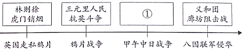
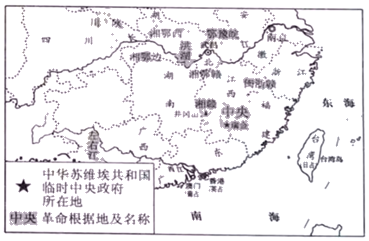
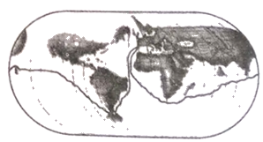
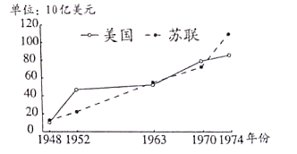
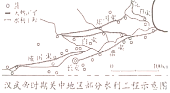
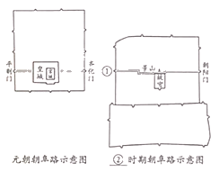
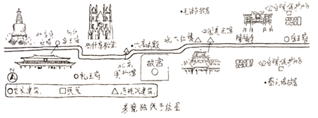

2020年北京市中考历史试题 原卷解析
2020年北京市中考历史试卷
参考答案与试题解析
一、选择题本部分30小题，每小题1.5分，共45分。在每小题列出的四个选项中，选出最符合题目要求的一项。
1．2019年，北京平谷上宅遗址被列为全国重点文物保护单位。遗址中发现了大量陶器、磨制石器和半地穴式房屋遗存，这三类考古发现还出现在（ ）
A．元谋人遗址B．北京人遗址C．河姆渡遗址D．半坡遗址
【分析】本题考查半坡原始居民的生产生活状况，知道半坡人使用磨制石器，会制造彩陶，种植粟，住半地穴式房屋。
【解答】据题干并结合所学知识，距今约6000年的半坡人是我国黄河流域农耕时代的代表，他们使用磨制石器，会制造彩陶，种植粟，住半地穴式房屋。故这三类考古发现还出现在半坡遗址。
故选：D。
【点评】本题考查半坡原始居民的生产生活状况，考查学生的理解和分析能力，解题关键是掌握基础知识。
2．如图是“医”字已知最早的写法，是用勾（医疗器具）将矢（箭）从人体上剔出，表示医疗。该字属于（ ）

A．甲骨文B．小篆C．隶书D．楷书
【分析】本题考查甲骨文，知道甲骨文使用象形、指事、会意、形声等多种造字方法。
【解答】如图是“医”字已知最早的写法，是用勾（医疗器具）将矢（箭）从人体上剔出，表示医疗。该字属于甲骨文，甲骨文是商朝刻写在龟甲或兽骨上的文字，是中国已发现的古代文字中年代最早、体系较为完整的文字。甲骨文使用象形、指事、会意、形声等多种造字方法。
故选：A。
【点评】本题考查甲骨文，考查学生的理解和分析能力，解题关键是掌握基础知识。
3．以下博物馆的名称来源于古代一项政治制度。这项制度是（ ）
名称 | 齐文化博物馆 | 晋国博物馆 | 西周燕都遗址博物馆 |
省份 | 山东 | 山西 | 北京 |
A．分封制B．郡县制C．科举制D．行省制
【分析】本题考查西周的分封制，知道西周实行分封制，分封到今天山东省的有齐国和鲁国，分封到今天山西省的主要是晋国，分封到今天北京的是燕国。
【解答】西周建立后，周天子把土地、奴隶和平民分封给亲属和功臣等，封他们为诸侯，建立诸侯国。当时分封到今天山东省的有齐国和鲁国，分封到今天山西省的主要是晋国，分封到今天北京的是燕国。故这项制度是分封制。
故选：A。
【点评】本题考查西周的分封制，考查学生的识记和理解能力，解题关键是熟练掌握基础知识。
4．如图《全国出土秦计量器主要分布图》可用于研究秦朝（ ）

A．铁犁牛耕的推广B．巩固统一的措施
C．迅速灭亡的原因D．“推恩令”的实施
【分析】本题主要考查秦朝加强中央集权的措施，秦统一六国后，为加强统治，在政治上建立专治主义中央集权制度；经济上统一货币度量衡；文化上统一文字；军事上北击匈奴；交通上统一车轨。
【解答】通过地图分析，这是秦朝计量器分布图，可反映出秦朝经济上统一度量衡，B符合题意。A主要是春秋战国时期生产工具革新。C图片没有体现出秦迅速灭亡。D西汉时期实行推恩令。
故选：B。
【点评】本题以秦朝加强中央集权这一基础知识为切入口，考查学生分析、判断问题的能力。
5．飞天是我国石窟艺术中最富舞蹈美感的形象之一，以下飞天形象的变化反映出（ ）
 大同云冈石窟中北魏早期的飞天舞姿雄健，具有游牧民族的审美特色 大同云冈石窟中北魏早期的飞天舞姿雄健，具有游牧民族的审美特色
| 
北魏迁都洛阳后开凿的龙门石窟中，飞天 的服饰、舞具都有中原汉风 |
A．书法艺术成熟B．北方民族融合
C．江南经济开发D．南北政权对峙
【分析】本题考查石窟艺术。注意题干信息“大同云冈石窟中北魏早期的飞天舞姿雄健，具有游牧民族的审美特色”“北魏迁都洛阳后开凿的龙门石窟中，飞天的服饰、舞具都有中原汉风”。
【解答】魏晋南北朝时期，我国北方出现了民族融合的趋势，各民族生产生活上各民族相互学习，错居杂处，加强了相互交流，促进了民族融合；唐朝实行比较开放的民族政策，民族关系和谐，民族融合。据“大同云冈石窟中北魏早期的飞天舞姿雄健，具有游牧民族的审美特色”“北魏迁都洛阳后开凿的龙门石窟中，飞天的服饰、舞具都有中原汉风”并结合所学知识可知，飞天形象的变化反映出北方民族融合；B符合题意。
故选：B。
【点评】本题注重考查学生的分析能力，本题的关键点是分析题干，注意准确识记石窟艺术的相关知识。
6．如图材料共同说明了唐朝（ ）

A．兴盛的原因B．农业的发展C．衰落的过程D．割据的结果
【分析】本题考查贞观之治、女皇武则天、开元盛世，知道材料共同说明了唐朝兴盛的原因。
【解答】唐太宗吸取前朝灭亡的教训，虚心纳谏，知人善用，他统治时期出现贞观之治的治世局面。武则天重视发展农业，继续实行发展农业生产，宣布贤才的政策，人称她的统治“政启开元，治宏贞观”；唐玄宗统治前期，整顿吏治，亲自选拔地方官员，出现了开元盛世的局面。故材料共同说明了唐朝兴盛的原因。
故选：A。
【点评】本题考查贞观之治、女皇武则天、开元盛世，考查学生的识记和理解能力，解题关键是熟练掌握基础知识。
7．唐朝时期，东亚国家与中国在语言文字、思想意识、社会组织、物质文明等方面联成一体，形成一个以中国为文化源的中华文化圈。以下促成这一文化圈形成的有（ ）
①日本遣唐使来华
②鉴真东渡
③新罗学习唐朝政治制度
④郑和下西洋
A．①②③B．①②④C．①③④D．②③④
【分析】本题主要考查了唐朝时期的对外交往的相关史实，由于唐朝对外交往频繁，唐朝时期，东亚国家与中国在语言文字、思想意识、社会组织、物质文明等方面联成一体，形成一个以中国为文化源的中华文化圈。
【解答】根据题干唐朝时期，东亚国家与中国在语言文字、思想意识、社会组织、物质文明等方面联成一体，形成一个以中国为文化源的中华文化圈。以下促成这一文化圈形成的有①日本遣唐使来华；②鉴真东渡；③新罗学习唐朝政治制度，A符合题意。④郑和下西洋，发生在明朝时期，与题干无关，排除。
故选：A。
【点评】本题主要考查了唐朝时期的对外交往的相关史实，注意基础知识的识记与理解。
8．如图《中国古代局部人口密度变化图》能反映出（ ）

A．中外文化交流B．经济重心南移
C．疆域面积扩大D．君主专制强化
【分析】本题考查中国古代经济重心南移，知道从唐朝中期开始的经济重心南移，到南宋时最后完成。
【解答】据图片看出，公元2年北方人口密度远远大于南方，742年南方人口密度迅速增长，到1102年南方人口密度超过了北方，图片反映的是经济重心南移，从唐朝中期开始的经济重心南移，到南宋时最后完成。
故选：B。
【点评】本题考查中国古代经济重心南移，考查学生的理解和分析能力，解题关键是掌握基础知识。
9．一位同学要按照北京城的历史沿革参观以下地点，顺序应为（ ）
①元大都城墙遗址
②明城墙遗址
③金中都水关遗址
A．①②③B．①③②C．②①③D．③①②
【分析】本题考查北京城的沿革。金政权、元朝、明朝都在北京定都。
【解答】根据所学可知，1115年阿骨打建立金政权，在今天北京定都；1271年忽必烈改国号为元，次年定都于大都（北京）；朱棣即位后开始修建北京城，1421年迁都北京。所以D为正确的顺序。
故选：D。
【点评】掌握在北京定都的政权，了解北京城的建成过程。
10．以下史实的历史作用的共同点是（ ）
郑成功收复台湾 | 清朝在台湾建制 |
明末荷兰殖民者侵占台湾。清初在东 南沿海抗清的郑成功打败荷兰侵略者， 收复台湾 | 郑成功后代割据台湾。清政府打败郑 氏军队，台湾归入清朝版图，设置台湾 府，隶属福建省 |
A．维护了祖国领土完整
B．加强了对西北地区的管辖
C．推行了闭关锁国政策
D．实现了清朝对全国的统治
【分析】本题考查郑成功收复台湾和清朝在台湾建制历史作用的共同点。注意题干信息和相关知识的准确把握。
【解答】据题干信息并结合所学知识可知，1624年，荷兰殖民主义者侵占中国台湾。1661年3月，郑成功从金门出发，进军台湾。包围了赤嵌楼和和台湾城。在高山族人民的支持下，1662年，荷兰总督被迫在投降书上签了字。至此，郑成功从荷兰侵略者手里收复了沦陷38年的我国神圣领土台湾。郑成功收复台湾，维护了中华民族的利益，捍卫了中国主权和领土的完整。1684年，清朝康熙时设台湾府，隶属福建省。台湾府的设置，加强了台湾同祖国大陆的联系，促进了台湾的开发，巩固了祖国的海防。A符合题意，BCD不符合题意。
故选：A。
【点评】本题注重考查学生的分析能力，本题的关键点是分析题干，注意准确识记郑成功收复台湾和清朝在台湾建制历史作用的相关知识。
11．如图示意图中①处应填的是（ ）

A．戚继光抗倭B．雅克萨之战C．黄海海战D．《马关条约》
【分析】本题以示意图的形式考查近代中国侵略与反抗的两大主题。掌握甲午中日战争反抗外来侵略的表现。
【解答】示意图中反映的是中国近代史侵略与反抗的两大主题。甲午中日战争中，1894年9月，清政府北洋舰队在黄海大东沟海域，遭到日本舰队袭击，致远舰管带邓世昌率舰冲锋向前，激战中，致远舰多处中弹，邓世昌下令，开足马力，直冲敌舰，日舰躲避，同时施放鱼雷，击中致远舰，邓世昌与全舰官兵壮烈牺牲。故选C符合。戚继光抗倭是发生在明朝反抗外来侵略的表现；雅克萨之战是发生在清朝17世纪中期，反抗沙俄的入侵；《马关条约》是甲午中日战争失败后签订的条约，不属于反抗侵略的表现。因此ABD都不正确。
故选：C。
【点评】掌握甲午中日战争的相关知识，分析判断侵略与反抗的历史史实。
12．如表反映了中国近代史前期的有识之士的探索历程，①处应填（ ）
主要内容 | 代表言论 |
① | 中国欲自强、则莫如学习外国利器 |
政治制度 | 育才于学堂，论政于议院 |
思想文化 | 科学与人权并重 |
A．军事技术B．文学艺术C．实业救国D．民主共和
【分析】本题考查洋务运动，知道洋务派领导发动洋务运动，学习西方的军事技术，目的是维护清朝统治。
【解答】据题干并结合所学知识可知，19世纪60﹣﹣90年代中期，洋务派领导发动洋务运动，学习西方的军事技术，目的是维护清朝统治。洋务运动前期，洋务派以自强为口号，创办近代军事工业。洋务运动后期，洋务派以求富为口号，创办民用工业。故①处应填军事技术。
故选：A。
【点评】本题考查洋务运动，考查学生的识记和理解能力，解题关键是熟练掌握基础知识。
13．对以下材料理解正确的是（ ）
①维新派在北京组织强学会，在上海创办《时务报》
②戊戌变法作为一场政治运动失败了，但是作为一场思想文化运动，其作用远不是政变所能剿洗干净的。
A．①属于历史结论
B．①说明戊戌变法废除了旧制度
C．②属于历史史实
D．②肯定了戊戌变法的历史作用
【分析】本题考查对戊戌变法的认识。1898年6月11日，光绪帝颁布“明定国是”诏书，宣布实行变法。
【解答】①维新派在北京组织强学会，在上海创办《时务报》是对历史事实的表述，不属于历史结论，也没有涉及废除旧制度的内容，AB不正确；②戊戌变法作为一场政治运动失败了，但是作为一场思想文化运动，其作用远不是政变所能剿洗干净的是对戊戌变法这一史实的评价，是历史结论，肯定了戊戌变法的历史作用。故C不正确，D正确。
故选：D。
【点评】掌握戊戌变法的内容和意义。
14．以下内容是一位历史人物的部分经历，他是（ ）
时间 | 1894年 | 1905年 | 1912年 | 1913年 |
事件 | 成立兴中会 | 成立中国同盟会 | 就任中华民国 临时大总统 | 发动“二次革命” |
A．洪秀全B．梁启超C．章炳麟D．孙中山
【分析】本题主要考查孙中山的革命活动的相关史实。孙中山先生是中国民主革命的伟大先行者。
【解答】据所学知识可知，孙中山创立了中国最早的革命团体兴中会，又联合华兴会、光复会等革命组织组建了中国第一个资产阶级革命政党﹣﹣中国同盟会。在《民报》上，他提出的“三民主义”成为了辛亥革命的指导思想。此后，他领导了多次反对清政府封建统治的武装起义。武昌起义爆发后，他回国领导了辛亥革命，并组建了中华民国临时政府，就任中华民国临时大总统，制定了《中华民国临时约法》，建立了民主政体。孙中山第一个提出推翻清王朝，建立资产阶级共和国。辛亥革命后，他又发动了旨在反对北洋军阀的二次革命。孙中山被称为中国民主革命伟大的先行者。据题干内容可知，这是历史人物孙中山的部分经历。选项D符合题意。
故选：D。
【点评】本题主要考查学生对图片信息的有效获取能力。理解并识记孙中山的革命活动的相关史实。
15．如图反映的是（ ）

A．北伐胜利进军B．工农武装割据
C．坚持敌后抗战D．三大战役胜利
【分析】本题主要考查新民主主义革命的兴起。掌握工农红军武装割据的相关史实。
【解答】据题干信息并结合所学知识可知，1927年9月，毛泽东领导工农革命军发动秋收起义，部队在进攻长沙受挫后，率部队向井冈山进军，创建了中国革命史上第一个农村革命根据地﹣﹣井冈山革命根据地。井冈山革命根据地的开辟，是中国共产党探索农村包围城市、武装夺取政权这一革命道路的开始，中央革命根据地在赣西南、闽西革命根据地的基础上发展起来的中央革命根据地，是全国苏维埃运动的中心区域，是中华苏维埃共和国党、政、军首脑机关所在地。据题干图片和文字信息“中华苏维埃”“革命根据地”并结合所学知识可知，图反映的是工农武装割据。B符合题意。
故选：B。
【点评】注重考查学生识记和分析历史知识能力，注意掌握新民主主义革命道路探索的重大事件以及影响。
16．1935年1月中共中央召开会议，会后中央红军在毛泽东为代表的中共中央领导下，四渡赤水，巧渡金沙江，跳出了敌人的重重包围，这次会议是中国共产党从幼年走向成熟的标志，此会议是（ ）
A．中共一大B．古田会议C．遵义会议D．中共七大
【分析】本题主要考查遵义会议。题干关键信息“中国共产党从幼年走向成熟的标志”。
【解答】1935年1月，中共中央政治局在贵州遵义召开扩大会议。这次会议确立了以毛泽东为核心的党中央的正确领导，遵义会议挽救了党，挽救了红军，挽救了革命，是党的历史上生死攸关的转折点，标志着中国共产党从幼稚走向成熟。C符合题意。
故选：C。
【点评】本题注重考查学生识记和分析历史知识能力，注意掌握遵义会议的召开背景、内容以及意义。
17．如图漫画《搁浅》（依原图改绘）创作于1941年，该漫画表达的是（ ）

A．九一八事变成为中国人民抗日战争的起点
B．淞沪会战打破日本三个月灭亡中国的迷梦
C．世界爱好和平与正义的国家和人民支持中国抗战
D．中华民族空前团结，英勇抗争必将取得抗战胜利
【分析】本题主要考查中国抗日战争胜利的原因的相关史实。识读图片是解答本题的关键。
【解答】据题干漫画《搁浅》中“日本丸”“持久战”“全面战”及所学知识可知，中华民族空前团结，英勇抗争必将取得抗战胜利。据所学知识可知，在中国共产党倡导下，建立了以国共两党合作为基础的抗日民族统一战线；国民党军队在正面战场与日军展开了多次会战，消灭了大量日军，打击了日军的嚣张气焰；中国共产党提出了全面抗战路线，制定了持久战的战略方针和一整套正确的作战原则，中国共产党领导的八路军、新四军以及各地的人民抗日武装抗击和牵制着大部分侵华日军和几乎全部伪军，成为全民族抗战的中流砥柱，对抗战的胜利起了决定性作用。中华民族空前团结，英勇抗争必将取得抗战胜利。选项D符合题意。
故选：D。
【点评】本题主要考查学生对图片的解读能力和对历史知识的识记、理解能力。理解并识记中国抗日战争胜利的原因的相关史实。
18．如图纪念章反映的历史事件（ ）

A．加速了人民解放战争在全国的胜利
B．推翻了官僚资本主义在中国的统治
C．大大提高了我国的国际地位
D．摧毁了我国的封建土地制度
【分析】本题主要考查抗美援朝运动的历史意义。抗美援朝为经济建设赢得了相对稳定的和平环境。
【解答】1953年7月，美国侵略军被迫在停战协定上签字。中朝人民取得了反侵略战争的伟大胜利。抗美援朝战争的胜利，维护了亚洲和世界和平，大大提高了新中国的国际威望，极大地增强了中华民族的自信心和凝聚力，为新中国经济建设赢得了一个相对稳定的和平环境。
故选：C。
【点评】本题主要考查学生识记历史基础知识的能力，注意掌握抗美援朝运动的历史意义。
19．深圳一直是我国对外开放的重要“窗口”，现在正向中国特色社会主义先行示范区迈进，深圳成为“窗口”的起点是指（ ）
A．实行民族区域自治
B．实行家庭联产承包责任制
C．成为首批经济特区
D．开启了城市经济体制改革
【分析】本题考查经济特区的设立，知道深圳成为“窗口”的起点是指成为首批经济特区。
【解答】1980年，我国在广东深圳、珠海、汕头和福建的厦门建立四个经济特区，后来又增设海南经济特区。这些经济特区，国家给予优惠的经济政策，吸收侨资外资，引进先进科学技术和管理经验。深圳在短短几年内，建成一座繁华的现代化城市，成为经济特区的代表，对外开放的窗口。故深圳成为“窗口”的起点是指成为首批经济特区。
故选：C。
【点评】本题考查经济特区的设立，考查学生的识记和理解能力，解题关键是熟练掌握基础知识。
20．如表是某班制作的“云展板”的主要内容，其主题是（ ）
1970年4月，我国第一颗人造地球卫星﹣﹣东方红一号发射成功。 2003年10月，神舟五号载人飞船升入太空并成功返回地面。 2020年6月，我国北斗三号最后一颗组网卫星发射成功。 |
A．核能利用B．走向太空C．大国外交D．军队改革
【分析】本题主要考查我国走向太空的相关史实。掌握我国的科技发展。
【解答】据某班制作的“云展板”的主要内容“1970年4月，我国第一颗人造地球卫星﹣﹣东方红一号发射成功。”“2003年10月，神舟五号载人飞船升入太空并成功返回地面。”“2020年6月，我国北斗三号最后一颗组网卫星发射成功。”可知，我国的航天技术飞速发展，逐步走向太空，故其主题可以确定为走向太空。选项B符合题意。
故选：B。
【点评】本题主要考查学生对图片信息的有效获取能力。理解并识记我国走向太空的相关史实。
21．从13世纪晚期到16世纪，欧洲出现了对古典文明的再发现，但最令人感兴趣的成就都是全新的，因此，当时主要是“兴”，而不是“复兴”。其中的“兴”是指（ ）
A．对古典文化的全面继承B．中世纪西欧城市的兴起
C．人文主义思潮逐渐流行D．文艺复兴向西欧的传播
【分析】本题考查学生对文艺复兴相关知识的掌握。从意大利开始的文艺复兴运动的核心思想是人文主义，即要求以人为中心；而不是以神为中心；提倡发扬人的个性，追求人在现实生活中的幸福。
【解答】据题干“从13世纪晚期到16世纪，欧洲出现了对古典文明的再发现，但最令人感兴趣的成就都是全新的，因此，当时主要是‘兴’，而不是‘复兴’。”可知，其中的“兴”是指人文主义思潮逐渐流行。从意大利开始的文艺复兴运动，持续了近三百年。它使人们开始认识到，必须打破中世纪以来的封建统治和教会神学对人们的思想束缚，强调和发挥人在这个世界上的作用，倡导人文主义精神。而这些思想正是当时新兴资产阶级的愿望。
故选：C。
【点评】本题考查学生对文艺复兴相关知识的掌握。重点识记文艺复兴的内容与影响。
22．如图是绘制于1543年的地球平面球形图，图中的航线是（ ）

A．达•伽马到达印度B．哥伦布首次到达美洲
C．麦哲伦船队环球航行D．“三角贸易”路线
【分析】本题考查新航路的开辟，知道1519﹣1522年麦哲伦船队完成了世界上首次环球航行。
【解答】据题干并结合所学知识可知，1519﹣1522年麦哲伦船队完成了世界上首次环球航行。故图中的航线是麦哲伦船队环球航行。
故选：C。
【点评】本题考查新航路的开辟，考查学生的理解和分析能力，解题关键是掌握基础知识。
23．示意图能够勾勒出史实之间的关系。如图示意图中①处应为（ ）

A．英国“光荣革命”B．美国的建立
C．美国内战D．日本明治维新
【分析】本题主要考查美国的建立的相关史实。重点掌握来克星顿枪声、《独立宣言》、美国1787年宪法的相关史实。
【解答】北美是英国的殖民地，1775年的来克星顿枪声是美国独立战争开始的标志。1776年7月4日，大陆会议通过了《独立宣言》，宣告北美13个殖民地脱离英国独立，美国诞生。《独立宣言》由杰斐逊起草，以法律文献的形式规定了人的基本权利，例如生命权、自由权和追求幸福的权利等等，《独立宣言》被称为“第一个人权宣言”。《独立宣言》发表后，各州先后制定了州宪法。美国建立后各州各行其是，矛盾重重，代表国家的全国政府软弱无力。1787年，各州派出代表齐聚费城，由华盛顿主持召开了制宪会议，经过争论和妥协，最终制定出美国宪法。宪法依据分权制衡原则设计了一个联邦制共和国：行政、立法、司法三权分立，总统、国会与最高法院及其相关机构各司其职，相互制衡；联邦政府与地方政府分享权力；总统和议员由选举产生。1787年美国宪法是世界上第一部资产阶级成文宪法，对后来许多国家的政治变革产生了重要影响。故题干图片内容体现了美国的独立。图示意图中①处应为美国的建立。
故选：B。
【点评】本题考查学生解读图片获取信息的能力。理解并识记美国的建立的相关史实。
24．《拿破仑法典》第8条和第537条规定：“所有法国人都享有民事权”“私人得自由处分属于其所有的财产”，可以看出法典（ ）
①体现法律面前人人平等
②保护私有财产权
③意在压榨欧洲各国人民
④维护君主立宪制
A．①②B．①③C．②④D．③④
【分析】本题主要考查《拿破仑法典》的内容的相关史实。《拿破仑法典》是资产阶级国家的第一部民法典。其立法精神和原则为后来许多欧洲国家借鉴和效仿。
【解答】拿破仑在位期间，对内巩固资产阶级统治，颁布了《民法典》（又叫《拿破仑法典》），后来《刑法典》《商法典》等法典相继出台，建立起完整的法律体系。《拿破仑法典》第一次确认了民事权利平等、废除贵族特权、财产所有权无限制和契约自由等资产阶级民法的基本原则，是资产阶级国家的第一部民法典，它的立法精神和原则为后来很多欧洲国家借鉴和效仿。据“所有法国人都享有民事权”“私人得自由处分属于其所有的财产”可以看出，法典体现法律面前人人平等、保护私有财产权。①②符合题意。
故选：A。
【点评】本题主要考查学生识记和分析历史知识的能力。理解并识记《拿破仑法典》的内容的相关史实。
25．多数历史学家认为，第一次世界大战的爆发应由欧洲列强分摊责任，德国不是战争的唯一发动者。以下能说明这一观点的是（ ）
A．第二次工业革命使德国迅速发展
B．三国同盟和三国协约的扩军备战
C．交战国使用了许多新式武器
D．战争造成巨大的人员伤亡
【分析】本题主要考查第一次世界大战的知识点。重点掌握第一次世界大战爆发的原因。
【解答】第二次工业革命后，在资本主义经济政治发展不平衡的影响下，帝国主义国家间围绕着争夺殖民地、争夺霸权展开了激烈的斗争。各帝国主义大国出于自身的利益，拉帮结派，寻找盟友，重新组合，导致帝国主义两大军事集团﹣﹣三国同盟和三国协约形成。两大军事集团疯狂扩军备战，加剧世界局势紧张，世界大战一触即发，严重威胁了世界和平，最终导致了第一次世界大战。多数历史学家认为，第一次世界大战的爆发应由欧洲列强分摊责任，德国不是战争的唯一发动者。能说明这一观点的是三国同盟和三国协约的扩军备战，B符合题意。二次工业革命使德国迅速发展不能表明德国成为战争的唯一发动者；A不符合题意，交战国使用了许多新式武器不能体现战争的责任者，C不符合题意；D战争造成巨大的人员伤亡，是战争的后果，战争的后果不能体现战争的责任者，D不符合题意。
故选：B。
【点评】本题主要考查学生的识记能力以及分析问题的能力。需要准确掌握第一次世界大战重大事件以及影响。
26．某位历史人物认为，1914年时英国人仅以几万名官员和士兵就统治了3亿印度人，这是因为各阶层正与英国人合作，如果取消这种合作，英国的统治必将崩溃。这位历史人物是（ ）
A．玻利瓦尔B．章西女王C．甘地D．纳赛尔
【分析】本题主要考查甘地在印度领导的发表了不合作运动的相关史实。第一次世界大战后，亚洲的殖民地和半殖民地国家掀起了争取民族独立的运动。其中，甘地领导的印度非暴力不合作运动和凯末尔领导的土耳其革命和改革影响深远，颇具特色。
【解答】第一次世界大战期间，印度民众和英国殖民政府之间的矛盾加剧。一战结束后甘地领导非暴力不合作运动，沉重打击了英国的殖民统治。据“1914年时英国人仅以几万名官员和士兵就统治了3亿印度人，这是因为各阶层正与英国人合作，如果取消这种合作，英国的统治必将崩溃。”及所学知识可知，这位历史人物是甘地。选项C符合题意。
故选：C。
【点评】本题主要考查解读题干信息和对历史史实的分析和准确识记能力。理解并识记甘地在印度领导的发表了不合作运动的相关史实。
27．将俄国这个欧洲专制主义“堡垒”变成了世界上第一个社会主义国家的历史事件是（ ）
A．彼得一世改革B．俄国农奴制改革
C．俄国十月革命D．实施新经济政策
【分析】本题主要考查十月革命。掌握俄国十月革命的意义。
【解答】根据所学知识可知，1917年，列宁领导十月革命，建立了苏维埃政权﹣﹣人民委员会，第一个社会主义国家诞生﹣﹣苏俄（或苏维埃俄国、苏维埃社会主义俄国）。十月革命是人类历史上第一次获得胜利的社会主义革命，将俄国这个欧洲专制主义“堡垒”变成了世界上第一个社会主义国家的历史事件是俄国十月革命。
故选：C。
【点评】本题主要考查学生的识记能力以及分析问题的能力。识记与灵活掌握十月革命的背景、经过以及影响。
28．第二次世界大战胜利的重要原因是反法西斯国家相互支援，协同作战。以下能说明这一观点的是（ ）
①欧洲、亚洲战争策源地形成
②《联合国家宣言》的签署
③中国远征军入缅作战解救英军
④诺曼底登陆
A．①②③B．①②④C．①③④D．②③④
【分析】本题主要考查国际反法西斯联盟建立。1942年1月，苏、英、美、中等26个国家签署《联合国家宣言》标志着国际反法西斯联盟的建立。
【解答】第二次世界大战胜利的重要原因是反法西斯国家相互支援，协同作战。能说明这一观点的是②《联合国家宣言》的签署、③中国远征军入缅作战解救英军、④诺曼底登陆。①欧洲、亚洲战争策源地形成是日本法西斯走上侵略道路的表现，不能体现反法西斯国家相互支援，协同作战，不符合题意。
故选：D。
【点评】本题主要考查学生的识记能力以及分析问题的能力。识记与灵活掌握国际反法西斯联盟建立的原因、时间、标志及影响。
29．如图《美苏国防开支数据图》可用于说明（ ）

A．冷战时期美苏两大国进行军备竞赛
B．二战后美苏两国经济实力交替上升
C．美国实行马歇尔计划援助西欧国家
D．冷战后世界格局向多极化方向发展
【分析】本题主要考查二战后冷战政策。掌握冷战时期美苏两大国进行军备竞赛激烈的史实。
【解答】依据题干信息“美国、苏联国防开支表”，结合所学知识：从“美国、苏联国防开支表”可以看出：1950﹣﹣1970年，美苏两国的军费开支增长迅速，这反映了二战后，美苏两国的军备竞赛不断升级。BCD在《美苏国防开支数据图》中无法体现，排除。
故选：A。
【点评】本题主要考查学生的识记能力以及分析问题的能力。识记与灵活掌握二战后冷战政策实施的原因、表现和影响。
30．1995年1月，世界贸易组织正式成立。它成立后的10年里，世界贸易总额增加了3倍。以下关于世贸组织的说法正确的是（ ）
①以促进全球贸易和经济发展为宗旨
②可向冲突地区派出维和部队
③彻底消除了世界各国间的贸易摩擦
④符合经济全球化的发展潮流
A．①②B．②③C．③④D．①④
【分析】本题主要考查世界贸易组织。世界贸易组织的作用是促进全球贸易和世界经济发展。
【解答】1995年1月，世界贸易组织正式成立。它成立后的10年里，世界贸易总额增加了3倍。世贸组织①以促进全球贸易和经济发展为宗旨、④符合经济全球化的发展潮流。②可向冲突地区派出维和部队是联合国，③彻底消除了世界各国间的贸易摩擦说法绝对，②③不符合题意。
故选：D。
【点评】本题主要考查学生运用所学知识解决问题的能力。识记与灵活掌握世界贸易组织成立的时间、经过和意义。
二、材料分析题（共4小题，满分45分）
31．（10分）人类在与疫病的斗争中不断进步。
材料一：①东汉末年，疫病流行，张仲景不顾自身安危，尽力救治病人。
②“五禽戏”创编于东汉末年，有助于强身健体，预防疾病。
③两宋时期，政府在疫病流行时常向百姓施散医药。
④明朝的李时珍采用多种方法治疗疫病，无论病人贫富都悉心治疗。
⑤我国古代民间发明“种痘”方法预防传染病﹣﹣天花，这一方法后来传播到其他国家。
⑥康熙年间，面对疫情，政府免除租赋，鼓励垦荒，恢复生产。
（1）将材料一的史实与以下观点相对应。（填序号，每空多选、少选、错选均不得分）
我国古代政府有应对疫情的措施： ③⑥
我国古代医生具有高尚的医德： ①④
我国古人有预防疫病的做法： ②⑤
材料二：19世纪以前，欧洲人主要凭借经验或想象对抗疫病。19世纪被称为“科学世纪”，能量守恒与转化定律、细胞学说等，充分揭示了自然界运动、变化的规律。西方医学逐渐凭借实验研究和对疾病实体的观察，建构起生物医学体系的框架。在此基础上，发现了细菌与传染病的关系，采用现代医学技术防治疫病，发明了人工减毒疫苗技术，研制成功狂犬病疫苗等。
（2）依据材料二，写出19世纪前后欧洲人应对疫病手段的变化。结合所学，说明产生这些变化的原因。
材料三：中国免疫规划四十年大事记（部分）
1978年，我国全面实施计划免疫，有4种疫苗纳入国家免疫规划（免费接种）。 2004年，《中华人民共和国传染病防治法》规定，国家实行“有计划的预防接种制度”和“预防接种证制度”。 2007年，中央财政增加投入25亿元，共有14种疫苗纳入国家免疫规划。 2013年，我国以乡为单位的国家免疫规划疫苗接种率达到90%以上。 2018年，我国实现无白喉等传染病例报告；1岁和5岁以下儿童的传染病发率和死亡率大大降低。 |
（3）依据材料三，概括1978年以来我国实施免疫规划取得的成就。结合所学，分析取得成就的原因。
材料四：如图是2020年的一幅抗疫主题海报，其中的文字内容体现了人类历史上对抗疫病的经验和智慧。
（4）综合以上材料，在①处补充一项符合主题的内容。
【分析】（1）本题主要考查张仲景、华佗、李时珍以及古代政府防治疫情的措施。
（2）本题主要考查19世纪前后欧洲人应对疫病手段的变化。考查学生分析归纳问题的能力。
（3）本题主要考查改革开放以来我国实施免疫规划取得的成就及其原因。
（4）本题主要考查学生分析归纳问题的能力。
【解答】（1）我国古代政府有应对疫情的措施：③⑥；我国古代医生具有高尚的医德：①④；我国古人有预防疫病的做法：②⑤。
（2）19世纪以前，欧洲人主要凭借经验或想象对抗疫病；19世纪以后主要是西方医学建构起生物医学体系的框架，采用现代医学技术防治疫病，研制成功疫苗防治疫情。资本主义经济的发展；科学技术应用于医学，推动医学发展；自然科学理论的发展革新。
（3）有计划的预防接种制度不断完善；基层疫苗接种率高升；儿童传染病发病和死亡率大大降低。
（4）①秉持人类命运共同体理念。
【点评】（1）根据材料分析，本题是选择相应的选项。来看各项：①东汉末年，疫病流行，张仲景不顾自身安危，尽力救治病人，这主要讲述张仲景个人医德，所以是我国古代医生具有高尚的医德。②“五禽戏”创编于东汉末年，有助于强身健体，预防疾病，这主要是古人防御措施，所以是我国古人有预防疫病的做法。③两宋时期，政府在疫病流行时常向百姓施散医药，这主要是政府方面工作，所以是我国古代政府有应对疫情的措施。④明朝的李时珍采用多种方法治疗疫病，无论病人贫富都悉心治疗。这主要讲述李时珍个人医德，所以是我国古代医生具有高尚的医德。⑤我国古代民间发明“种痘”方法预防传染病﹣﹣天花，这一方法后来传播到其他国家，这主要是古人防御措施，所以是我国古人有预防疫病的做法。⑥康熙年间，面对疫情，政府免除租赋，鼓励垦荒，恢复生产，这主要是政府方面工作，所以是我国古代政府有应对疫情的措施。故答案是：我国古代政府有应对疫情的措施：③⑥；我国古代医生具有高尚的医德：①④；我国古人有预防疫病的做法：②⑤。
（2）根据材料分析，19世纪以前，欧洲人主要凭借经验或想象对抗疫病；19世纪以后主要是西方医学建构起生物医学体系的框架，采用现代医学技术防治疫病，研制成功疫苗防治疫情。根据所学，出现此种变化的主要原因有：资本主义经济的发展；科学技术应用于医学，推动医学发展；自然科学理论的发展革新。
（3）根据材料分析，1978年以来我国实施免疫规划取得的成就主要有：有计划的预防接种制度不断完善；基层疫苗接种率高升；儿童传染病发病和死亡率大大降低。
（4）根据材料分析，漫画是2020年的一幅抗疫主题海报，其中的文字内容体现了人类历史上对抗疫病的经验和智慧，主要有：全球携手抗疫；注重预防；完善公共卫生体系。除此之外还有秉持人类命运共同体理念。所以①是秉持人类命运共同体理念。
故答案为：
（1）我国古代政府有应对疫情的措施：③⑥；我国古代医生具有高尚的医德：①④；我国古人有预防疫病的做法：②⑤。
（2）19世纪以前，欧洲人主要凭借经验或想象对抗疫病；19世纪以后主要是西方医学建构起生物医学体系的框架，采用现代医学技术防治疫病，研制成功疫苗防治疫情。资本主义经济的发展；科学技术应用于医学，推动医学发展；自然科学理论的发展革新。
（3）有计划的预防接种制度不断完善；基层疫苗接种率高升；儿童传染病发病和死亡率大大降低。
（4）①秉持人类命运共同体理念。
32．（13分）劳动传承智慧•劳动开创伟业•劳动成就梦想
材料一：
科技著作 | 时期 | 成书过程 |
A 《齐民要术》 | 南北朝 | 贾思勰任太守时亲自参与耕作，还广泛搜集前人文献， 引用其中200多种，但不盲从经典，注重记录能提高生 产效率的新工具 |
《农政全书》 | 明朝 | 徐光启大量引用古代农业文献，还试种甘薯等取得成 功，根据自己的经验推广，并在书中加入此类独特研究 成果 |
B 《天工开物》 | 明朝 | 宋应星全面总结古代多个部门的科技成果，亲自考察 瓷、蔗糖等制作工艺并录入书中，还用先进的研究方法 对技术数据进行定量描述 |
（1）从以下著作中选取正确内容填入材料一相应的位置。（填序号）依据材料一，概括三部著作成书过程的共同点。
①《伤寒杂病论》②《齐民要术》③《本草纲目》④《天工开物》
材料二：18世纪中期，英国工业生产动力主要是水力，受地点、季节等条件限制，需要发明一种“万能”动力机。1763年，瓦特为格拉斯哥大学修理机器，同时旁听了理论课程。经过深入思考和反复实践，瓦特改进了蒸汽机。由于有了这种动力装置，曼彻斯特地区的棉纺厂从18世纪80年代初的2家发展到1830年的99家。1785年瓦特当选为英国皇家学会会员，为英国的发明家树立了榜样。
﹣﹣摘编自马克垚《世界文明史》
（2）依据材料二并结合所学，从个人和社会的角度分析瓦特改进蒸汽机的原因及作用。
材料三：人类的起源既是生物进化过程，也是社会进化过程。马克思和恩格斯在肯定达尔文学说的基础上，揭示了劳动在从猿到人的转变过程中的作用。马克思说：“自然界没有制造出任何机器，没有制造出机车、铁路、电报、走锭精纺机等等。它们是人类劳动的产物，是变成了人类意志驾驭自然的器官……它们是人类的手创造出来的人类头脑的器官。”
﹣﹣摘编自萧前等《历史唯物主义原理》
（3）依据材料三并结合所学，写出“达尔文学说”的观点，概括马克思对劳动作用的认识。
材料四：全国劳动模范是党中央、国务院授予在新中国建设事业中做出重大贡献者的荣誉称号。在1956年开展的全国劳动模范表彰活动中，劳模主要集中在重工业战线，很多是提前完成计划规定指标的先进生产者。在这次劳模评选过程中，辽宁、北京等8个省市共涌现出20多万名先进生产者。
﹣﹣摘编自姚力《新中国成立初期的劳模表彰及其社会效应》
（4）依据材料四并结合所学，写出与1956年劳模评选直接相关的历史事件。分析这次劳模评选的作用。
材料五：人民创造历史，劳动开创未来。劳动是推动人类社会进步的根本力量。
﹣﹣2013年《习近平在同全国劳动模范代表座谈时的讲话》
（5）综合以上材料并结合自身实际，谈谈对劳动的认识。
【分析】本题以劳动传承智慧•劳动开创伟业•劳动成就梦想为切入点，以五则材料为依托，综合考查《齐民要术》、《天工开物》、瓦特改良蒸汽机的原因和作用、达尔文的观点、一五计划，题目设计注重基础性，要在掌握课本相关知识的基础上，对问题进行深入的分析作答。
【解答】（1）据题干框表信息并结合所学知识可知，著作中选取正确内容填入材料一相应的位置；据材料一，概括。A“贾思勰任太守时亲自参与耕作，还广泛搜集前人文献”对应②《齐民要术》；B“宋应星全面总结古代多个部门的科技成果，亲自考察瓷、蔗糖等制作工艺并录入书中”对应④《天工开物》。三部著作成书过程的共同点是：广泛搜集前人文献；汲取前人的成果，但不盲从经典；注重亲身实践等。
（2）据材料二并结合所学可知，从个人和社会的角度看，瓦特改进蒸汽机的原因是：原有的生产动力受到地点、季节等条件限制；具备一定的实践经验和理论知识；经过深入思考和反复实践等。瓦特改良蒸汽机使棉纺厂不再受地点、季节等条件限制，推动了纺织业的发展，为英国的发明家树立了榜样。
（3）据材料三并结合所学可知，“达尔文学说”的观点是：人类的起源既是生物进化过程，也是社会进化过程；人类是由古猿演变而来的，不是上帝创造的。马克思对劳动作用的认识是：在从猿到人的转变过程中劳动起了重要作用；机器是人类劳动的产物。
（4）据材料四并结合所学可知，与1956年劳模评选直接相关的历史事件是一五计划即将完成。这次劳模评选激发了人们的劳动积极性，加快了经济建设的步伐，使我国的工业化建设取得了巨大的成就，初步改变了我国工业落后的面貌。
（5）本题是开放型题目，考查学生开放性思维的能力。只要符合题意，言之有理即可。如劳动创造财富。
故答案为：
（1）A﹣②《齐民要术》；B﹣④《天工开物》。共同点：广泛搜集前人文献；汲取前人的成果，但不盲从经典；注重亲身实践等。
（2）原因：原有的生产动力受到地点、季节等条件限制；具备一定的实践经验和理论知识；经过深入思考和反复实践等。作用：使棉纺厂不再受地点、季节等条件限制，推动了纺织业的发展，为英国的发明家树立了榜样。
（3）“达尔文学说”的观点：人类的起源既是生物进化过程，也是社会进化过程；人类是由古猿演变而来的，不是上帝创造的。马克思对劳动作用的认识：在从猿到人的转变过程中劳动起了重要作用；机器是人类劳动的产物。
（4）一五计划即将完成。激发了人们的劳动积极性，加快了经济建设的步伐，使我国的工业化建设取得了巨大的成就，初步改变了我国工业落后的面貌。
（5）劳动创造财富。
【点评】本题考查学生识记和分析历史知识的能力，理解把握《齐民要术》、《天工开物》、瓦特改良蒸汽机的原因和作用、达尔文的观点、一五计划的相关知识。运用所学，具体分析作答。
33．（11分）大国治水•利国利民
材料一：汉武帝高度重视兴修水利。在长安附近开掘漕渠，方便了长安附近的运输，还可灌溉田地一万余顷。此外关中地区兴建了白渠、灵轵渠等工程。白渠灌溉得力，受益农田年年丰收。
﹣﹣摘编自袁行霈等《中华文明史》

（1）依据材料一，概括汉武帝时期关中地区水利工程的特点。结合所学，分析这一时期兴修水利工程的背景。
材料二：开挖大运河是这个短命的王朝最大的成就，后世的繁荣在很大程度上应归因于继承和改善了运河体系。两宋以后，北京之所以成为首都，也是这条运河延伸的结果。
元朝在今北京地区开凿通惠河后，南方来的船只可以到达大运河的终点﹣﹣积水潭。积水潭沿岸的斜街与钟鼓楼一带发展成为最繁华的商业市场，通惠河不仅是大都赖以生存的命脉，还是一条供城里人游览的风光河。
﹣﹣摘编自张妙弟《元大都与京城水系》等
（2）依据材料二，写出这个“王朝”的名称。概括大运河对北京城发展的作用。
材料三：
苏联第聂伯河水电站 | 美国田纳西水利工程 |
由国家电力委员会制定规划，1927年开始动工，5年后按照计划建成投产。经过扩建，它所提供的电力可以满足周边大型钢铁厂和铝厂的需求，催生了一些新兴工业城市 | 在总统罗斯福的推动下，建立了田纳西河流域管理局。1933年水利工程开始兴建，水力发电推动了当地工农业发展，人民生活水平提高。这是推行“以工代赈”的典型事例 |
（3）依据材料三，比较两项水利工程的相同点。任选一项水利工程，结合所学，分析其兴建的历史背景。
材料四：南水北调工程是我国改革开放和社会主义现代化建设取得的重大成就。这一工程经过几十年的论证和准备，2002年正式开工。在建设过程中，成立了国务院南水北调工程建设委员会，协调了各部委、沿线各省市等力量。该工程是迄今为止世界上规模最大的调水工程，输水线路长，穿越河流多，其难度国内外没有先例。至2020年6月，中线一期工程累计输水300亿立方米，沿线6000万人口受益，京津冀地区人民生活饮用水质量明显提高。华北地区地下水过度开采状况得以缓解，水资源环境得到初步改善。
（4）近年来一系列大型工程的兴建，是中华民族伟大复兴的重要标志。依据材料四，谈谈对南水北调工程的认识。
【分析】（1）本题主要考查汉武帝时期关中地区水利工程的背景和特点。考查学生分析归纳问题的能力。
（2）本题主要考查大运河的开通和作用。
（3）本题主要考查苏联社会主义工业化建设和美国罗斯福新政。
（4）本题主要考查南水北调工程。
【解答】（1）根据材料和地图分析，可知，汉武帝时期关中地区水利工程的特点有：以长安为中心，大规模兴建水利工程，形成发达水利网；水利工程即能承担运输作用又能灌溉农田。根据所学，汉武帝兴修水利工程的背景有：京都人口断增加；官僚机构迅速膨胀；又要用兵匈奴和经营西域；中央政府的粮食支出非常浩繁，压力很大。为了解决这个问题，西汉政府一方面在关中大修水利，以便发展当地农业，就近取粮。另一方面是改善水运条件，以便从当时主要产粮区的东部地方，调运更多的粮食进京。
（2）根据材料分析，“开挖大运河是这个短命的王朝最大的成就，后世的繁荣在很大程度上应归因于继承和改善了运河体系”，可知大运河的开凿朝代是隋朝。根据材料，大运河对北京城的作用有：“两宋以后，北京之所以成为首都，也是这条运河延伸的结果”，说明大运河延伸推动北京成为政治中心。“积水潭沿岸的斜街与钟鼓楼一带发展成为最繁华的商业市场”，说明大运河促进北京城商业贸易的繁荣。“通惠河不仅是大都赖以生存的命脉，还是一条供城里人游览的风光河”，说明大运河丰富北京城市民生活，提供休闲娱乐场所。
（3）根据表格分析，两项水利工程，一个是苏联五年计划时期的第聂伯河水电站，一个是美国罗斯福新政时期的田纳西水利工程，二者相同之处在于：都是政府主持兴建；都促进本国经济的发展，推动社会进步。根据所学，苏联第聂伯河水电站是苏联社会主义工业化时期兴建，此时的背景是苏联工业落后，国家迫切需要发展重工业。而美国田纳西水利工程的背景是美国爆发经济危机，大量工人失业，为解决就业问题，国家推行“以工代赈”来缓解就业压力，促进经济恢复。二者选一即可。
（4）根据材料分析，“南水北调工程是我国改革开放和社会主义现代化建设取得的重大成就”、“该工程是迄今为止世界上规模最大的调水工程，输水线路长，穿越河流多，其难度国内外没有先例”，可知南水北调工程是我国社会主义现代化建设新时期取得的重大成就；工程量巨大、难度极大，是中国实力的体现。“至2020年6月，中线一期工程累计输水300亿立方米，沿线6000万人口受益，京津冀地区人民生活饮用水质量明显提高，华北地区地下水过度开采状况得以缓解，水资源环境得到初步改善”，可知南水北调工程提高京津冀地区人民生活饮用水的质量，缓解华北地区水资源紧张。
故答案为：
（1）以长安为中心，大规模兴建水利工程，形成发达水利网；水利工程即能承担运输作用又能灌溉农田。京都人口断增加；官僚机构迅速膨胀；又要用兵匈奴和经营西域；中央政府的粮食支出非常浩繁，压力很大。
（2）隋朝。大运河延伸推动北京成为政治中心；大运河促进北京城商业贸易的繁荣；大运河丰富北京城市民生活，提供休闲娱乐场所。
（3）都是政府主持兴建；都促进本国经济的发展，推动社会进步。苏联第聂伯河水电站是苏联社会主义工业化时期兴建，此时的背景是苏联工业落后，国家迫切需要发展重工业；美国田纳西水利工程的背景是美国爆发经济危机，大量工人失业，为解决就业问题，国家推行“以工代赈”来缓解就业压力，促进经济恢复。
（4）南水北调工程是我国社会主义现代化建设新时期取得的重大成就；工程量巨大、难度极大，是中国实力的体现。提高京津冀地区人民生活饮用水的质量，缓解华北地区水资源紧张。
【点评】本题主要考查学生对西汉水利工程、苏联社会主义工业化建设、美国罗斯福新政等基础知识的识记情况，进而考查学生分析归纳问题的能力。
34．（11分）朝阜路浓缩北京历史，延续城市文脉。某历史社团开展了朝阜路考察活动。
【搜集资料规划路线】
朝阜路东起朝阳门，西至阜成门。这条路形成于元代，元大都平则门与齐化门所在位置就是今天的阜成门与朝阳门。历史上这条道路曾被皇宫隔为东西两段，民国时期，人们才可以穿行于旧时的皇家禁地，东西城交通距离缩短。

（1）依据资料，填写①②处对应的内容。写出朝阜路路线的变化。
【实地考察、主题研究】
①历代帝王庙 | ②北京图书馆 | ③紫禁城 | ④毛泽东故居 |
清朝修建，入祀的既有汉族帝王，也有女真族、蒙古族等少数民族帝王 | 1912年正式开放，是中国第一家公共图书馆。现为国家图书馆古籍馆 | 明清皇家宫殿。是明清两朝的政治统治中心，皇帝在此处理政务 | 1918～1919年毛泽东在此居住。期间在北京大学图书馆工作，接受了马克思主义 |
⑤中国美术馆 | ⑥隆福寺 | ⑦蔡元培故居 | ⑧东四头条至十二条 |
新中国美术的最高殿堂，致力于开展公共服务，组织层次艺术教育活动 | 清朝时，每月都有庙市，百货聚集，古玩字画，风味小吃，为诸市之冠 | 1917～1920年蔡元培在此居住。期间担任北大校长，采用兼容并包的办学方针 | 胡同与四合院共同代表着老北京人的生活居住方式，是京味文化的重要组成部分 |
（2）以上是朝阜路沿线的几处重要考察地点。从以下主题1、2、3中任选一个，并选取两个相关的考察地点，分别说明考察地点与主题的关系。（仿照示例完成）
主题1：近代思想解放；主题2：民俗文化；主题3：公共文化事业发展。
示例：
主题 | 考察地点 | 关系说明 |
统一多民族国家的巩固与发展 | ① | 历代帝王庙将不同时期、不同民族的帝王作为祭祀的对象，有利于民族交融和国家统一，体现中华民族多元一体的格局 |
② | 紫禁城是明清两朝的政治统治中心，体现出中央集权的加强，统一多民族国家的巩固 |
【整理笔记 感悟文化】

朝阜路和中轴线相互结合，一条横贯东西，另一条纵贯南北，共同支撑起北京老城的文脉骨架。在朝阜路两侧，密布着元朝以来类型多元的历史文化遗存。其中元朝的妙应寺白塔是藏式佛塔，清代的西什库教堂是西方哥特式建筑，民国时期修建的中央医院是北京市第一家公立医院，20世纪50年代修建的华侨大厦是首都“十大建筑”之一。
（3）依据以如图文笔记，概括朝阜路的历史文化特点。
【成果运用 提升认识】
今天我们的城市建设，在对历史传统加以继承的时候，也要体现我们的时代精神。传统形式并非一个固定形式，而是一段一段的历史所赋予，一代一代的城市居民所创造。例如，在妙应广场规划方案中，采用下沉式广场的方式。使白塔更显得高大，附近公共建筑设计屋顶花园，与广场花园绿地呼应，广场下部安排地下停车场，缓解了周边地区绿地、广场和停车场短缺的问题。
﹣﹣摘编自高毅存《传统建筑与主流意识﹣﹣朝阳门一阜成门文化街的思考》
（4）结合学者观点和考察内容，为朝阜路的发展提出一个建议。
【分析】（1）本题主要考查学生分析、判断问题的能力。
（2）本题主要考查新文化运动、马克思主义传播等知识。考查学生分析归纳问题的能力。
（3）本题主要考查朝阜路的历史文化特点，考查学生分析归纳问题的能力。
（4）本题主要考查学生学以致用的能力。
【解答】（1）根据材料分析并结合地图，“朝阜路东起朝阳门，西至阜成门”，可知①是阜成门。“历史上这条道路曾被皇宫隔为东西两段，民国时期，人们才可以穿行于旧时的皇家禁地，东西城交通距离缩短”，可知②是民国时期。
（2）根据图表分析，可知本题是开放性题目，答案不唯一，言之有理即可。示例：选择主题一：近代思想解放。考察地点为：④⑦．关系说明：④毛泽东故居，毛泽东是近代新民主主义革命领军人物，在马克思主义的指引下，找到适合中国的革命道路，体现出近代思想的解放。⑦蔡元培故居，蔡元培曾任北京大学校长，革新北大，开学术与自由之风，促进近代思想解放。
（3）根据材料和地图分析，“朝阜路和中轴线相互结合，一条横贯东西，另一条纵贯南北，共同支撑起北京老城的文脉骨架”，可知朝阜路和中轴线相互结合，共同支撑起北京老城的文脉骨架。“朝阜路两侧，密布着元朝以来类型多元的历史文化遗存”，可知，朝阜路两侧，密布着元朝以来类型多元的历史文化遗存。“其中元朝的妙应寺白塔是藏式佛塔，清代的西什库教堂是西方哥特式建筑，民国时期修建的中央医院是北京市第一家公立医院，20世纪50年代修建的华侨大厦是首都十大建筑之一”，可知，建筑形式多元，文化丰富。
（4）根据材料分析，朝阜路的发展提出的建议有：确定其文化街的定位，保护文化古迹；强化文物景观，弱化交通功能。
故答案为：
（1）①阜成门。②民国时期。
（2）选择主题一：近代思想解放。考察地点：④⑦．关系说明：④毛泽东故居，毛泽东是近代新民主主义革命领军人物，在马克思主义的指引下，找到适合中国的革命道路，体现出近代思想的解放。⑦蔡元培故居，蔡元培曾任北京大学校长，革新北大，开学术与自由之风，促进近代思想解放。
（3）朝阜路和中轴线相互结合，共同支撑起北京老城的文脉骨架。朝阜路两侧，密布着元朝以来类型多元的历史文化遗存。建筑形式多元，文化丰富。
（4）确定其文化街的定位，保护文化古迹；强化文物景观，弱化交通功能。
【点评】本题以北京紫禁城等基础知识为切入口，主要看考查学生分析归纳、学以致用的能力。